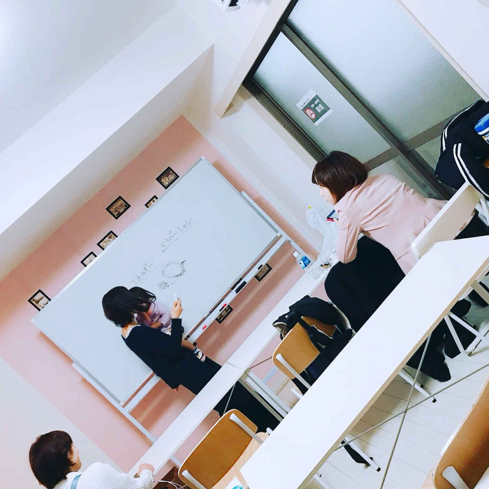
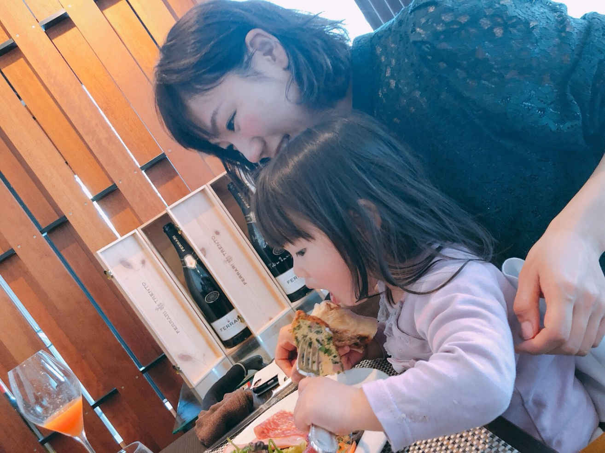
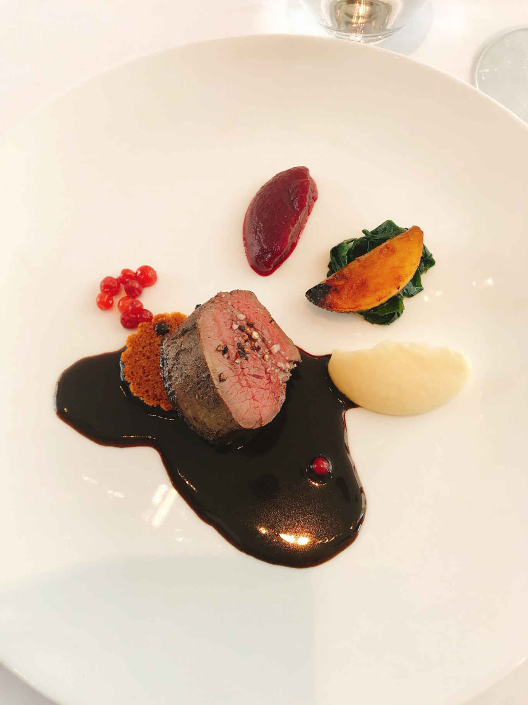
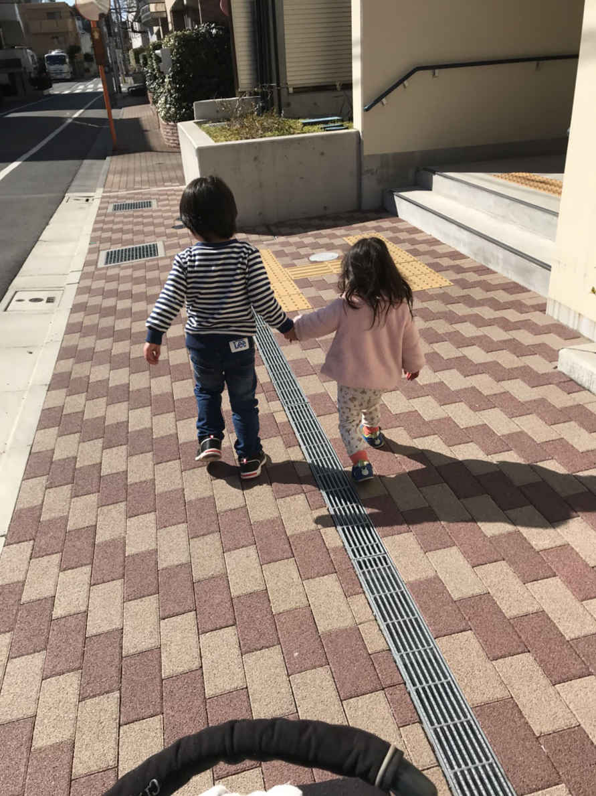

| お金と時間の自由を手に入れる在宅ワークの始め方 〜子育てしながらできる秘訣〜 | |
| Nozomi | |
| Eagle Publishing (2018) | |
Nozomi
あなたはインターネットビジネスで月収１００万円と聞くと、どんなイメージを持ちますか？
「胡散臭い」
「詐欺っぽい」
「一部の選ばれた人だけでしょ」
これがほとんどの人の感想ですよね。確かに、世の中には悪い人がたくさんいるので、疑いもせずに鵜呑みにしてしまうと、詐欺の被害にあってしまうこともあります。
けど、そのお話が本当だった場合、「怪しい」って疑って思考停止した時点で、一生成功することはできません。
メルカリがスタートした時、ユーザーはまばらで誰も今の大成功を収める姿など想像ができませんでしたよね。
平成29
年初頭に仮想通貨のイーサリアムを10
万円だけ購入していた人は、平成30
年１月中旬に１６９倍の１６９０万円を手にしていたことになります。
誰にでも同じようにチャンスは訪れるのに、それを手に入れることができるかどうかの違いは「否定から入らないこと」だけです。
最初から疑ってかかることは、将来の大きな利益や安定した収入を自ら投げ捨てることと同じなのです。
けど、すぐには信じられないあなたの気持ちもよくわかります。私はオプトインアフィリエイトというインターネットビジネスに出会って、子育てと家事の隙間時間で、大手企業の正社員以上の収入を得ていますが、未だに母には「怪しいことをしている」と思われるくらいです。
けど、私が手にしているお金も心のゆとりも、間違いなく本物。
そして、その成功をあなたにも経験して欲しいと思っています。私みたいに時間を持て余しているけどお金がない主婦、仕事に追われているサラリーマン、就職がなくて困っている学生さん、そんな方々が私の話を聞いて、一歩を踏み出す勇気を手に入れてくれたらと思ってこの本を書きました。
同じビジネスの仲間であるちょっと疑り深い Tsuyoshi さんとの対談の中で、私たちのビジネスについて知ってもらえればと思います。

Nozomi 今回は対談ってことで駆けつけていただき、ありがとうございます。ビジネス仲間ってことで、顔を合わせることは多いけど、こうやってお互いのことを話すのは初めてなので、緊張しますね。
Tsuyoshi そうですね。僕も少し緊張しています(笑)。ってことで、Nozomi さんの昔話をしてもらえませんか？
Nozomi 昔話ですか(笑)？ わかりました。じゃあ、ネットビジネスに出会う前の私についてお話ししますね。私は、ビジネスを始める前は、自分に自信がなくて面倒くさがりの、どこにでもいる主婦だったんですよね。口癖は「あーあめんどうくさいなあ」とか「まあいっか」。よく言えば、おおらかで細かいことは気にしないタイプですが、悪く言えば物事に無頓着な感じです。
Tsuyoshi えー！ そうなんですか。そんな感じに見えない。今はもっとアグレッシブですよね。ガツガツ頑張ってる感じです。面倒くさいとか言ってるところ想像できませんよ。
Nozomi そうなんですけどね。そもそも主婦に見えないってよく言われてます。けど、それはビジネスに出会って自信をつけたって感じで、それまでは結構適当だったんですよ。
Tsuyoshi うーん。ピンとこないなあ。今は生き生きしてるし、いつも楽しそうなのに。
Nozomi 自分が好きなことには一生懸命になれたけど、熱しやすく冷めやすい性格なので、長く続けられたことは１つもないんです。芸能界にすごく興味があったので、大学に行きながら音楽スクールに通いましたし、卒業後も就職しないで俳優養成所に通いました。
Tsuyoshi それって地味にすごいですよね。夢に向かって頑張ってたんですね。
Nozomi けど、結局芽が出る前に諦めて、早々と結婚。結局、就職することなく家庭に入っちゃったんです。もったいないですよね。その経験は活かせてると思うけど、経歴はあんまり役に立たないんです。元々文章を書くのも苦手で、話すのも苦手、勉強も普通でこれといった特技もないから、正社員で働こうと思っても働けないんです。私の元に残されたのは中途半端な学歴と、「職歴なし」というレッテルだけ。だからパートしかできませんでした。
Tsuyoshi 確かに、結婚して子供が小さい就職経験がない女性が、いきなり正社員になるのは難しいですね。
Nozomi そうなんです。私の条件に合う求人ってあんまりなくて焦ってました。だから、「こんなのはダメだ。正社員で事務員さんとか営業とかで稼がなきゃ」って思い込んで、追い詰められちゃって。
Tsuyoshi えー！ 子育てしてるんだから堂々としてていいのに。パートでも子育ての両立って大変ですよ。
Nozomi 自分でもわかっているんですけど、旦那の稼ぎだけで食べさせてもらうのには抵抗があって。
Tsuyoshi そうかなあ。子育てだって立派な仕事だと思うんですけどね。
Nozomi そうなんだけど、パートのお給料だけだと、足りない気がして。もっと私が稼げたら、好きなものも買えるし子供の将来のために、貯金したり習い事をさせてあげたりできるのにって、悔しかったんです。男の人にはわかりにくいんですけど、全くお金を稼がないで使うだけって、それだけでストレスなんです。だから、必死にパートしてました。
Tsuyoshi そんなに苦しんでたんですね。じゃあその頃ビジネスに出会ったんですか？
Nozomi そうですね。って、私ばっかり恥ずかしいから Tsuyoshi さんも昔話してくださいね。
Tsuyoshi わかりました(笑)
Tsuyoshi 僕は、ネットビジネスに出会うまでは、工場の製造ラインで働いていたんですよ。高校を卒業してから、運良く一流企業の正社員として就職できたので。夢とかなくて、どっかで就職できればいいやって思ってただけなんですけどね。
Nozomi へー！ すごいですね。高卒で一流企業って、勝ち組ですよね。けどラインって結構きつくないですか？
Tsuyoshi そうそう。きついんですよ。毎日流れ作業ばっかりで。本当に僕そういうの耐えられなかったんですよね。
Nozomi ですよね。私も同じです。そういうの苦手。
Tsuyoshi 毎日会社に行って同じことの繰り返しって考えたら「これじゃダメだ」って思ったんですよ。「毎日ロボットかよ」って。
Nozomi それが好きな人もいますけどね。人と関わらずに黙々と仕事をするのが好きっていう人だったらぴったりですよね。
Tsuyoshi そうなんですけど、僕はそれが苦手だったから、毎日嫌だな嫌だなって思ってて。でも、僕23
歳で結婚して子供もいるから、絶対にあの仕事やめられないって思ってたんです。
Nozomi お給料がよかったから？
Tsuyoshi そうですね。年齢の割には多くもらっていたと思います。10
年勤めたから、役職もついてたし。けど、労働時間は１日15
時間です。朝の７時に家を出て、帰ってくるのは夜の10
時とか当たり前でした。
Nozomi それはきついですね。家に帰ってゆっくりする時間なんてないですね。
Tsuyoshi いわゆるブラック企業ですよね。みんながやってるから自分もやらなきゃって感じでしょうがなく残業してました。けど、全部残業代がつくわけじゃなくて、途中からはサービス残業です。
Nozomi 大きな会社でもそんなことあるんですね！ 知らなかった。
Tsuyoshi 普通にありますよ。そのせいか、体とか精神を壊しちゃう人が多くて。１年でやめたりする人もいたんです。同期も辞めた仲間が何人もいて。腰をやっちゃったり、心を病んじゃったり。それ見てたら「僕もいずれこうなるのかな」って思ったりして、将来が毎日不安でした。
Nozomi 本当に大変そう。お金は稼げても、そんな感じだったら人生が楽しくなさそう。そんなに労働時間長かったらお子さんと遊ぶ時間もあんまりないですよね？
Tsuyoshi 全然ないですよ。朝出かけるときはまだ寝てるし、帰ってきたらもう寝てるし(笑)。毎日成長する子供の笑ってる顔見たり、声を聞いたりすることがほとんどなくて、「俺何してるんだろう」って思うようになりました。
Nozomi 一番可愛い時期なのに、一番頑張ってるパパが見れないなんて悲しいですよね。子供もパパと会えなくて寂しいだろうし。
Tsuyoshi そうなんですよ！ だから考えたらどんどんどんどん今の状況に疑問しか出てこなくなってずっとモヤモヤしてました。
Nozomi 私と一緒ですね！ ずっとモヤモヤ。
Tsuyoshi そう。モヤモヤ(笑)。けど、動画見てたらネットビジネスの世界にたどり着いたんですよ。
Nozomi 私も動画でした！ まさに運命の出会いだと思ってます。

Nozomi Tsuyoshiさんって、どうやってオプトインアフィリエイトのビジネスにたどり着きましたか？
Tsuyoshi 僕は今30
歳で、知ったのが29
歳の時なんですけど、それまで全然しらなかったんですよ。
Nozomi 私も、こんな世界があるなんて夢にも思っていませんでした。
Tsuyoshi 僕も、YouTube の動画見るまで考えたこともなかったです。
Nozomi あの動画がいきなりヒットしたんですか？
Tsuyoshi そうじゃなくて、普通に動画見てたら、関連動画でピックアップされてたんですよね。それで、「なんだこれ」ってなってついつい見ちゃいました。
Nozomi そうなりますよね(笑) 。
Tsuyoshi やっぱり(笑)。あの動画は結構説得力ありますもんね。マジで？ ってひきつけられました。僕は、それまでみんなみたいに「野球選手になりたい」みたいな夢がなかったんですけど、動画を見て、これが僕のやりたいことだ！ って思いましたね。
Nozomi それまでもパソコン関係とかインターネット関係に興味があったんですか？
Tsuyoshi 全然なかったです(笑)。けど、あの動画をきっかけに、インターネットの影響力とか、パソコンのことを詳しく知りたくなったし、それをビジネスにしたいって思ったんです。自分が何かを発信するだけで、それがお金になる世界があるなんて、想像したこともなかったんです。
Nozomi それは、本当に人生の転機でしたね。
Tsuyoshi まさにその通りで、あの時あの動画に出会っていなかったら、って思うとちょっと怖いです。
Nozomi 偶然動画に出会えてよかったですね。
Tsuyoshi YouTube に感謝です(笑)。
Tsuyoshi Nozomi さんはどうやってオプトインアフィリエイトと出会ったんですか？
Nozomi 私の場合は、旦那がオプトインアフィリエイトがどうのってブツブツ言ってたんですよ。
Tsuyoshi へえ！ 旦那さん結構先見の明ありますよね。Nozomi さんより先に知ってたんだ。
Nozomi けど、そこから先には進まなかったみたいです(笑)。
Tsuyoshi もったいないですね。そこで先に進んでたら今頃 Nozomi さんたち凄いことになってるのに。
Nozomi ほんとそうですよ。私はすぐに気になって Google で検索したんです。そしたら、あの動画がヒットして。
Tsuyoshi 見ちゃったと。
Nozomi そうそう(笑)。なにこれ凄そうって思いながら、タップして気付いたらフルで見てました(笑)。むしろ３回くらい繰り返して見ちゃいました。
Tsuyoshi で、見終わった感想は？
Nozomi 私、正社員で働くことが絶対に正しいって思ってたんです。お金も稼げるし、安定しているし。それに、世間体もいいじゃないですか。「あそこの奥さん〇〇株式会社で事務員さんやってるのよ」って。けどあの動画を見て、正社員以外の選択肢ががあるんだって頭に雷が落ちた感じです。だって、毎日会社に行くとか、決められた仕事をするとかじゃないのに、お金が稼げるんですよ。日常をアップするだけで、収入が入るんです。
Tsuyoshi びっくりしますよね。
Nozomi 衝撃的でしたよ。これなら私にもできるかもって、ワクワクしました。モヤモヤしてるパート主婦の生活にさよならできるかもって思ったら、どきどきしてその日は眠れませんでした(笑)。
Nozomi 私は、すぐに「これだ！」って思ってコンタクトとったんですけど、Tsuyoshi さんは、すぐに ayaka さんにコンタクトをとりました？
Tsuyoshi 実は、１ヶ月くらい自分でやろうとしたんですよ。
Nozomi ちょっと疑り深いんですね(笑)。
Tsuyoshi そうなんです。ぶっちゃけ半信半疑でした。だって、普通そんなにネットで稼げるとか思えないじゃないですか。
Nozomi でも、ほとんどの人は半信半疑どころか、全疑いだから、半分信じただけすごいと思いますよ。
Tsuyoshi 全部嘘とは思えなかったんですよね。それに、なんか動画見てたら自分でもできそうだなって思ったんですよ。
Nozomi 確かに、自分でちょっとやってみようって思っちゃいますよね。それで結果はどうでした？
Tsuyoshi 自己アフィリエイトとか、ＳＮＳとかは問題なくクリアできたんですけど、その先でちょっとつまづいちゃいました。
Nozomi どういうところで？
Tsuyoshi やっぱり、最初ってそこそこ誰でも収入になると思うんですよ。けど、それはスタートダッシュでそのうちすぐに頭打ちになって、永久に稼ぐのは厳しくなるんです。最初はちょっと報酬が入ったけど、すぐに途絶えてそのまんま。全然うまくいかないんですよ。
Nozomi まあ、ノウハウ知らなきゃそうなるでしょうね(笑)。
Tsuyoshi その時初めて「コンタクトをとってメンターに話を聞いてみたい」って思ったんです。
Nozomi 結構遅いですね(笑)。もっと早くコンタクトとればよかったのに。
Tsuyoshi 今でもそこは後悔してます。Nozomi さんはもっと早かったんですか？
Nozomi 私はすぐ信じましたよ(笑)。
Tsuyoshi それはそれで、すごいですよね。普通の人って結構インターネットビジネスとかに抵抗持つ人が多いんだけど、なんですぐに信じられたんですか？
Nozomi なんか、直感で、これなら大丈夫って思ったんですよね。っていっても、何でもかんでもすぐに信じる訳じゃなくて、本当に怪しいのはピンと来るんです。だから、友達からマルチ誘われた時もその場で断れました。けど、これは怪しい感じがしなかったんですよね。言ってることが理屈にかなっていたし、ayaka さんから怪しい雰囲気が全くなくて。
Tsuyoshi 確かにそうなんですよね。
Nozomi ＳＮＳに投稿して、メールアドレスを登録してもらったら報酬が発生するオプトインアフィリエイトっていう仕組みがまずすごいなって。これだったらハードル高くないから、私でもできるし、この人が言ってることは本物だ！ って確信が持てたんです。
Tsuyoshi 羨ましい。僕も最初から信じてればもっと早くスタートできたのに。
Nozomi そこは信じたもん勝ちですね(笑)。
Nozomi ぶっちゃけ、周りってどういう反応しますか？ 批判されませんか？ 特に Tsuyoshi さんは一家の大黒柱だから。オプトインアフィリエイトで家族を養っているとかいうと、親世代は拒否感全開になると思うんですけど。
Tsuyoshi 最初に話した時に「あんた私を騙すつもりじゃないでしょうね」って言われましたよ。
Nozomi それは酷い(笑)。
Tsuyoshi そもそも、親どころか誰も騙さないのに。もうあの世代はネットっていうだけで怪しい感じがしちゃうんでしょうね。
Nozomi そうですよ。私なんて母親にうっかり話したら、もう大変な騒ぎですよ。
Tsuyoshi 怪しいのオンパレード？
Nozomi もう、電話だけじゃなくてメールでもずっと、「怪しい」とか「騙されてる」とか「詐欺」とか。迷惑メール並みです。
Tsuyoshi Nozomi さんのこと心配してるんでしょうけどね(笑)。
Nozomi わかってるんですけど、本当にうるさくて言うんじゃなかったって後悔してます。最初はしっかり説明しようと思ったんだけど、もうこれは何を言ってもダメだと思って最近は「わかったよ」とか「気をつけるよ」って言って話を終わらせてます。言ったのが失敗でした。
Tsuyoshi それがいいと思いますよ。だから、僕は言い方を工夫していてネットの広告代理店だって言っています。嫁さんもそれで納得しました。
Nozomi それって、本当にわかりやすい説明ですよね。奥さんにどんな感じで言ったんですか？
Tsuyoshi 「ネット上でオススメの商品を紹介するんだよ。広告代理店みたいな感じ」って言ったら、「そうなんだ！」で終わりました。
Nozomi いいですね。確かに私たちがやってるのって、テレビのＣＭみたいな感じですもんね。
Tsuyoshi そうそう。仕組みがわかれば、特に怪しくないし納得できる。
Nozomi 今私が教えてる塾生さんとかも、親に反対されたとか友達におかしいって言われたって相談してくる子が多くて。
Tsuyoshi やっぱりみんなそうなんですよね。何も知らない人は否定とか批判から入るパターンが多いから、そういう対応に苦労しちゃいます。
Nozomi ぶっちゃけ、私はわざわざ何をやっているのかを言う必要はないと思っています。働いてるよ、でいいんじゃないかなって。からくりがわかれば、誰でも理解できるんですけど、理解しようって思ってくれる人が少ないから。
Tsuyoshi そうですね。特に親世代は厳しい。だから、僕は親にも嫁にも相談せずにスタートしました。
Nozomi それが賢いと思います。
Tsuyoshi 僕の理想的なカミングアウトは、副業としてオプトインアフィリエイトをやってて、本業の収入を抜いた時に、「実はこういうのやってる」って切り出す感じです。
Nozomi それ素敵！ しっかり稼げるようになってたら反対のしようがないですもんね。お金稼げてるのに詐欺の訳ないもん。
Tsuyoshi みんな、ちゃんと収入があるってわかれば納得してくれるはずなんですよ。
Nozomi そうそう。みんな見た目が気になるし、なんでも否定から入る人が多いから、よく聞きもしないで「怪しい」って言うんですよ。だからビジネスで月収１００万円くらい稼げるようになったら、言ってみるといいと思います。
Tsuyoshi ほんとそれです。稼げるようになったら、それまで怪しいって言ってた人が何も言わなくなったんですよね。
Nozomi ですよね。実績ができたらみんな一斉に何も言わなくなるんです。
Tsuyoshi 僕もお金を持ったら周りが変わりました。みんな、否定したいって言うのもあるけど、僕たちのことを心配してくれてるんですよね。だから、それを安心させてあげるためにも、結果を出して報告してあげたらいいと思います。
Nozomi そうですよね。結果さえ出せばみんな反対しなくなるから、とりあえずこっそり始めて、結果を出してからカミングアウトするのが正解ですね。
Tsuyoshi それじゃあ今度から塾生さんたちにはそう教えてあげます。
Nozomi そうですね。プラス、何か言われても気にしないでって感じですね。みんな知らないことは否定したがるから、それを真に受けてたら身がもたないですし。
Tsuyoshi 本当にそう思います。
Nozomi Tsuyoshi さんって、ほぼ毎日お子さんの写真アップしてますよね？
Tsuyoshi あはは。確かにそうかも。もう可愛い盛りなんで。
Nozomi Tsuyoshi さんの赤ちゃんほんとムチムチで画面ごしなのに触りたくなっちゃう(笑)。 見てるだけだと、物足りなくて抱っこしたくなりますもん。
Tsuyoshi よく言われます(笑)。
Nozomi Tsuyoshi さんの赤ちゃんって、１歳半で９キロのうちの娘より大きくみえます。
Tsuyoshi え(笑) 。うちの子まだ８ヶ月なのに８キロあります。
Nozomi それはすごい(笑) 。コメントも殺到してますよね。
Tsuyoshi みんな可愛い可愛い言ってくれて嬉しいですよ。
Nozomi なんか、こうやって自分の子供と向き合えるようになるのも、ビジネスのおかげなんですよね。
Tsuyoshi そこなんですよ。僕、前の仕事してる時は子供の体重なんて知らなかったけど、今は現在の体重も成長曲線のどこらへんかも知ってますもん。
Nozomi 普通のパパって、子供の体重とか成長曲線とか知りませんから(笑) 。多分母子手帳だって見たことないと思うんです。けど、Tsuyoshi みたいにビジネスを始めたパパは、仕事にかける時間が激減するから、お子さんとじっくり向き合えるんですよね。
Tsuyoshi そうそう！ この仕事って、子育て世代にぴったりだと思ってます。前職は本当に拘束時間が長かったから、子供と遊ぶどころか育児の手伝いだってままならない感じだったんですよね。
Nozomi 朝７時から夜の10
時まで働いてたら、そうなりますよね。
Tsuyoshi だから、嫁さんに全部任せっきりだったんですよ。オムツ替えとか離乳食とか、幼稚園の準備とか、部屋の片付けとか全部。
Nozomi あらあ。奥さん大変だったでしょうね。それにプラスして、ご飯作ったり洗濯物したり。自分の時間なんて全然取れないですよ。
Tsuyoshi そう。今でいうワンオペ育児ってやつですよ。僕の実家が近くにあるからまだマシだけど、平日はほとんど嫁さんが１人で見てたんです。ノイローゼにはならなかったけど、やっぱりちょっと辛そうでした。
Nozomi じゃあ遊んであげられるのは休みの日だけ？
Tsuyoshi いやあ、もちろん休みの日くらいは遊んであげたいんだけど、ぶっちゃけちょっときついんですよね。平日の拘束時間が長い分、休みの日にやらなきゃいけないことが多すぎて、遊ぶ時間が取れないんですよ。
Nozomi わかります。ママ友と話していたら「休みの日くらい遊んであげればいいのに」っていうママの愚痴が多いんですよね。私もそう思うことありますもん。「平日は顔見るのがやっとこさなんだから、休みの日はずっと一緒にいてあげてよ」って。けど、私もパートしてたから、休みたいパパの気持ちもわかるんです。上司や同僚や部下、お客さんとの人間関係を築きながら、必死に働いてるんだから、休日くらい自分の好きなことやったりぼーっとしたりしたくなりますよね。私は、両方の言い分も気持ちもよくわかります。
Tsuyoshi そうなんですよね。働いてたら、本当しょうがないことなんですよ。子供と遊んであげたいけど、時間が足りなかったり、気力が足りなかったり。なんのために働いてるんだろうって思うことが多かったです。
Nozomi けど、Tsuyoshi さんみたいに、パパがネットビジネスを始めたら平日でも家に入れるから、奥さんの負担激減ですよね。奥さん喜んでるでしょ？
Tsuyoshi 基本僕は家で仕事する時は、結構集中しちゃうタイプなんだけど、やっぱり自分以外に家に誰かいるっていうのは心強いみたいですよ。いざっていう時は助けられるし、もちろん育児も家事も「手伝う」じゃなくて、僕の仕事だって思ってるから一緒にやりますし。
Nozomi わー！ それはママ的にはすごく嬉しいです。男の人って「手伝う」っていう感覚が多いから、どうしても主体的に動けないんですよね。けど、Tsuyoshi さんみたいに自分の仕事って思ってくれてたら、本当に楽。手伝ってあげてるって意識がなくなるだけで、ママは本当に心が軽くなりますよ。
Tsuyoshi 嫁もそう思ってるみたいです。前の仕事してる時よりも夫婦仲が良くなりました(笑)。
Nozomi やっぱり、小さいお子さんがいるパパこそ、このビジネスを始めるべきですね！ 私、最近ずっと思ってたんです。イクメンとかっていうけど、やっぱりママがやることが多すぎるって。
Tsuyoshi え！ ちょっと胸が痛いかも(笑)。
Nozomi Tsuyoshi さんはビジネス始めてちゃんと家のこともやってるからいいけど、普通の家庭って共働きでもママがやることが多すぎるんですよね。
Tsuyoshi わかります。家にいるようになって、「嫁さんこんなことまでしてたんだ」ってびっくりしました。
Nozomi そうなんですよ！ 同じくらい働いてるのに、ご飯の支度、翌日の準備、寝かしつけ、朝ごはんの用意、子供の身支度、トイレ、お風呂、とか全部ママがやってる家がほとんどなんです。パパがお風呂に入れてくれることもあるけど、子供達のパジャマを用意するのもママ。ママの負担が重すぎるんですよね。
Tsuyoshi それ全部やれって言われたら、今の僕でもちょっときついです。
Nozomi ママって本当に細かいルーティンがたくさんあるけど、それを評価してくれる人もいなければ、感謝してくれる人もいないから本当に報われないんです。けど、Tsuyoshi さんみたいに、パパがビジネスを始めたら、この問題は全部解決できるんですよね。私、これからはこれをもっと情報発信できたらなって思ってます。
Tsuyoshi すごい良いこと言いますね。確かに僕んちも、僕がビジネス始めてから嫁さんの負担は激減で、いつもニコニコしてるから子供もニコニコだし、僕も子供とじっくり関われるから、日々の成長を実感できて、本当に全員が喜んでるんですよね。一石二鳥どころじゃないですよ。
Nozomi 本当にそう思います。子育て世代のパパさんは絶対取り入れるべき！
Tsuyoshi 全員が楽になる上に収入が増える訳ですからね。もし、奥さん側も始めたらまさに無敵(笑)。
Nozomi 理想的ですね。そんな最強夫婦が誕生してくれないかな(笑)。
Tsuyoshi そういえば、Nozomi さんって髪の毛とかいつもキレイにしてるけど、美容院行く時ってお子さんどうしてますか？ やっぱり、実家に預けてます？
Nozomi 私の実家は九州だから親に頼れないんですよ。旦那の実家も遠方で。だから、身内に預けるのは不可能なんです。
Tsuyoshi それは大変そう。僕は実家が近いからちょいちょい預かってもらえるんだけど、それができないって結構辛いですよね。
Nozomi ほんときついです。体調悪い時も子供とべったりだし。けど、ビジネスを始めて収入が増えてきたら、いろんなサービスを使えるようになったので物凄く心と体が楽になりました。美容院も預かってもらってる間に行ってます。
Tsuyoshi へー！ 例えばどんなサービスがあるんですか？
Nozomi まずは保育園の一時預かり。それからファミリーサポートとベビーシッターです。ベビーシッターの中には育児だけじゃなくて、簡単な家事もやってくれる会社もあって助かるんですよ。掃除とか洗濯とか、食事の準備とか。
Tsuyoshi それは良いですね。僕の家も頼みたいくらい(笑) 。
Nozomi 奥さんと Tsuyoshi さんの気分転換のためだけでも、頼む価値ありです。
Tsuyoshi 今度試して見ます(笑)。そういえば、ファミリーサポートって聞きなれないんだけど何ですか？
Nozomi 自治体がやってる子育て支援サービスで、時間が余ってるお年寄りとか、子育てがひと段落した世代が登録してくれてるんです。それで子育て中のパパやママが「ちょっと預けたいな」っていう時に、連絡をすると子供を預かってもらえるんですよ。預かるのは、その人のおうちとか。
Tsuyoshi なんだか良さそうなサービスですね。
Nozomi そうなんです。ベビーシッターほど高くないし、子育て経験者が預かってくれることが多いから安心できるんですよね。今度私も３時間だけお願いしてみようと思ってます。
Tsuyoshi そういうサービスがあるのって、ワンオペ育児が当たり前の核家族にとっては助かりますね。
Nozomi かなり助かってます。また同じ話になりますけど、子育て中のママって、本当にやることが多すぎて自分の時間が取れないし、自分の体調不良の時も子供の面倒を見なきゃいけないから、毎日のプレッシャーが半端ないんですよね。けど、こうやってサポートしてくれるサービスがあると「誰かに頼る」っていう選択肢ができて、心にゆとりが生まれるんです。１人で育児を抱え込んでる閉塞感がなくなる感じで。
Tsuyoshi 確かにそうですね。けど、お金がかかるんでしょ？
Nozomi そう。だから私はビジネスを始めるまではそういうの利用できなくて、結構追い詰められちゃうことも多かったです。丸一日子供の相手をしてると、日本語を忘れちゃうんじゃないかってくらい誰とも喋れないし(笑)。
Tsuyoshi 確かに、嫁も上の子が小さいとき言ってました。夜帰ってきたら「これが12
時間ぶりの会話」ってげっそりした顔で言ってて、びっくりしたのを覚えてます。
Nozomi けど、ビジネスを始めたらお金にゆとりができるから、気軽に誰かに頼れるようになるんですよね。そしたら、いつもだったら私も子供も機嫌が悪くなる夕方でも、３人ともニコニコ過ごせるようになって。
Tsuyoshi Win-Win ですね。
Nozomi これまでは「全部私がやらなきゃ！」って頑張ってたんですよね。ママが全部やるべきっていう固定概念があったから。けど、女性起業家さんを見てると、外注できるところはみんな外注してたんですよね。掃除とかお買い物とか育児とか。それを見て、「ああ私が全部やらなくても良いんだ」って心が軽くなって、それをできるお金もあって、ようやく心が解放されました。
Tsuyoshi やっぱりお金がなきゃダメなんですね。
Nozomi そうですね。１時間あたりいくらって料金が決まってるから、普通の家庭だとちょっと厳しいかもしれないです。ベビーシッターだと最低でも１時間２０００円はかかっちゃうんで、パート時代は絶対無理でした。だって、パートの時給よりもシッター代の方が高くなっちゃうから(笑)。
Tsuyoshi 僕も前の収入だったらそういうの考えれなかったかも。うちは、今のところ僕が家にいるから大丈夫だけど。
Nozomi そうです。Tsuyoshi さんのところみたいに、パパがビジネスをできている家は大丈夫。けど、うちみたいにパパが普通の仕事をしている家庭は、ママが稼げば簡単に誰かに頼れるようになるんです。だから、今育児や家庭の悩みを抱えている人は、絶対にこのビジネスを始めてみるべきだと思います。
Tsuyoshi ですよね。僕が子育てと家事を分担するようになってから、みんなが笑ってることの方が増えましたから。
Nozomi うちも同じです。いつもニコニコ(笑) 。子供たちと離れる時間が作れることで、子供と遊んであげる時間が逆に増えてます。
Tsuyoshi そういえば、Nozomi さんって結構色んな業種のママ友？ っていうか友達がいるみたいですけど、昔から友達多かったんですか？
Nozomi え？ そう見えますか？ 確かに今は、色んな人とお話ししたりする機会が多いかも。けど、昔は結構ぼっちでしたよ(笑)。
Tsuyoshi 全然想像できないです。ママ友とかいなかったんですか？
Nozomi あんまりいませんでした。気が合う人がいなくて。けど他のママたちを見ると結構友達がたくさんいるんですよね。それを見てたら、へこんじゃいました。ママ友が多い友達と比べちゃって、私友達少なすぎとか。仲良いママ友もいなくて結構孤独でした。
Tsuyoshi 実家も遠いし、旦那さんも忙しかったら、本当に寂しいですよね。
Nozomi そうです。孤独な子育てって感じでした。けどビジネスを始めたら自然と、ビジネス系のママと繋がることが増えたんです。
Tsuyoshi 不思議ですね。
Nozomi やっぱり、お互い好きな仕事をしてるってところで、共通点があるから話が合うんでしょうね。結構色んな業種のワーキングママと話ができて面白いです。みんなに共通してるところは仕事が好きってところかな。
Tsuyoshi それって良いですよね。いやいや与えられた仕事をやってる人と、自分からアグレッシブに仕事に取り組む人って、普段の会話も違いますもんね。
Nozomi そうなんですよ！ 結構何でも否定から入る人って多いと思うんだけど、自分の仕事に誇りを持ってる人って、新しい何かが出てきた時も否定じゃなくて興味から入るんですよね。例えば、私のビジネスの話をすると、普通のママは「詐欺でしょ」とか「怪しいんじゃない？」って言ってくるし、露骨にそういう顔をするんです。けど、仕事が好きっていうママは「なにそれなにそれ、どういう仕組み？」って食いついてくるんです。この差って大きいなって。
Tsuyoshi 確かにそうですね。何でも否定から入る人って、損してると思います。やっぱり、仕事が好きでガツガツ頑張ってるママたちは、否定じゃなくて好奇心旺盛で前向きなんですね。
Nozomi だから話をしてても面白いです。どこどこが新しいサービスを始めたよっていうと、真っ先に使ってみるんですよね。それで、そのジャンルのアーリーアダプターになって、ますます成功すると。彼女たちは、きっとこれからも自分の好きな仕事をしながら、いろいろなチャンスをものにし続けるんだと思います。そういう環境に身を置くことで、私もたくさん吸収できるし。
Tsuyoshi なんか、ワーキングママの世界ってすごいんですね。
Nozomi １人のママさんは、「子供と一緒でも仕事ができる環境を作りたい」って言ってて、それを実現するために頑張ってるんです。会社に子供を連れてきてもいいんだよっていうのを広めたいって。
Tsuyoshi それが広まれば、世の中のママさんはもっと楽になりますよね。そんな柔軟な発想が持てる人がママ友にいるなんてすごい。
Nozomi 私もみんなのことすごいなって思ってます。ビジネスを始めなければ、知ることができない世界だったから、ほんと感謝しかないです。毎日子供と旦那以外の人と喋ることがほぼなかったあの時代には、戻りたくありません(笑)。

Nozomi Tsuyoshi さんはこのビジネスを成功させるコツって何だと思います？
Tsuyoshi そりゃやっぱり、とりあえず始めることですよね。
Nozomi やっぱそうですよね。けどそれが一番ハードルが高いかも。
Tsuyoshi ですよね。僕だって最初は全面的に信じた訳じゃなかったですもん。動画を見て、本当かなあって。
Nozomi 私は全く疑わなくて、すぐにコンタクトをとったんですけどやっぱりレアケースみたいで、ほとんどの人は最初はちょっと戸惑うみたいですね。
Tsuyoshi 僕も Nozomi さんみたいに最初からコンタクトとっとけばもうちょっと早く稼げたのになあ(笑)。
Nozomi だって、あの動画ちゃんと見たらそんなに怪しくないですよね？
Tsuyoshi そう！ 怪しくないし、メンターの人なんて本当に信頼できるんだけど、やっぱりインターネットビジネスって、最初は怪しいって思っちゃうんですよ。
Nozomi もったいないなあ。私みたいに最初にコンタクトとって、教育してもらえばあっという間に、収入が増えるのに。
Tsuyoshi 確かにあれ、教育ですよね。僕めっちゃ教育されましたもん。一から叩き込まれたっていうか。
Nozomi 結構ガツガツ教えてもらえますよね。いくらでも質問できるし。教育が始まってから、やっぱりこれは本物だって確信しましたもん。ほったらかしじゃなくて、全部教えてもらえるから。
Tsuyoshi これやべえって思いました(笑)。
Nozomi ですよね(笑)。
Tsuyoshi 最初はネットビジネスって難しそうってイメージだったんだけど、メンターの人が丁寧に教えてくれるから、僕みたいなパソコン初心者でも抵抗なくできちゃって。けどやり始めは不安でしたよ。
Nozomi 私もちょっと不安でした。疑ってはなかったけど私にもできるかなって。私、ちゃんと就職して事務職とかしたことなかったから、パソコンスキルも低かったし。知識がない分、私でもできるかなあって。
Tsuyoshi えー！ 否定から入らないタイプだけど、やっぱ不安になったんですね。
Nozomi そりゃなりますよ。メンターの人とか雲の上の人みたいに稼いでたし。
Tsuyoshi けど、僕たちもいつの間にか教える立場ですね。
Nozomi なんか振り返るとあっという間だったけど、本当に成長したと思います。初めて収入が発生した時、すっごい嬉しくありませんでした？
Tsuyoshi めっちゃテンション上がりましたよ。僕は跳びはねちゃいました。
Nozomi 私も一人で「イェイイェイ！」って言っちゃいました。
Tsuyoshi 言ってそう(笑)。
Nozomi しかも、それからは自分の頑張り次第で収入が増えたから、もっと楽しくなりました。
Tsuyoshi 僕は結果が出なくてもなんか楽しくて、収入が伸びてきたらもっと楽しくなりました。普通のサラリーマンってお給料決まってますよね。
Nozomi そうですよね。昇級の時しかお給料変わらないイメージです。営業とか保険のセールスとかは、歩合があるから違うんだろうけど、普通は１年間同じお給料ですもんね。だから男の人って、このビジネスはすごいやりがいありそう。
Tsuyoshi めっちゃあります。努力が結果にでるって当たり前のことなんだけど、普通の社会ではそんなこと少ないんですよね。工場の仕事は、いくら頑張って人よりもたくさん働いたって評価されないです。そりゃ翌年のお給料が少しよくなるとかはありますけど、基本一緒。
Nozomi 接客パートも一緒でした。私は笑顔だけが得意技で、いつもお客さんに笑顔を褒められるくらい笑顔を絶やさなくて、自分なりにいい接客してたんですよね。けど、ぶすっとしてる他のパートさんと時給は変わらないんです。変わっても50
円くらいで。
Tsuyoshi けど、ネットビジネスは、頑張ったらその分結果に跳ね返ってきますよね。やりがい半端ないです。
Nozomi 頑張れば収入が増える。収入が増えたらやる気が出るっていう好循環が止まらない。
Tsuyoshi しかも、その内容が日常のことをＳＮＳで発信するだけっていう。
Nozomi それが仕事になってるんですからね。ホントびっくりしちゃいます。
Tsuyoshi 好きなことをやりたい時にやるって生活。
Nozomi まさに、やりたいことが仕事になったって感じです。
Tsuyoshi ですよね。僕は動画見て、１人でやってみてダメそうだったからメンターに連絡とったんだけど、あの時、連絡とってよかったなって心底思ってます。１日の充実度が全然違いますから。こっちの道を選んで正解でした。
Nozomi 私も、そうですよ。動画見てコンタクトとってよかったなって。それがなかったら今の生活はないですし、人生も全然違ってたと思います。
Tsuyoshi Nozomi さんは毎日ぼっちのワンオペ育児で、僕はブラック企業で流れ作業の毎日ですね(笑)。
Nozomi 多分、今でもそうだったでしょうね(笑)。
Tsuyoshi もし、まだ始めてない人がいたら、「とにかく連絡だけでもしてみてください」って言いたいです。それだけで人生変わるから。
Nozomi 私が教えてる塾生さんたちなんて、本当に何も知らないのにあっという間に収益化できてますからね。教えてる塾生さんに収入が入ってきたら、自分のことみたいに嬉しいです。
Tsuyoshi よっしゃー！ ってなります(笑)。最近のみんなは、結構早い段階で結果出せてるんで、すごいなっていう反面ちょっとうらやましいって思っちゃいます(笑)。
Nozomi 「僕も１ヶ月試行錯誤しないで、すぐに飛び込んどけばよかった」って(笑)？
Tsuyoshi その通りです(笑)。
Nozomi Tsuyoshi さんって最初からコミュニティに入ってました？
Tsuyoshi 僕は入ってましたよ。あれ？ Nozomi さんは入ってなかったんでしたっけ？
Nozomi そうなんですよ。私は教えてもらってる時はコミュニティに入ってなくて、家でコツコツやってたんです。すごい地道な作業でした。
Tsuyoshi いや、それ結構きついでしょ？ 最初って結構地味だから１人でコツコツやるの辛そう。
Nozomi うーん。ノウハウは教えてもらえるからいいけど、やっぱりペースがマイペースになっちゃってました。できる時はガーってやってたんですけど、ゆるい時はゆるいんですよね。
Tsuyoshi ですよね。結構自分との戦いみたいなところがあるから、仲間がいたほうが心強いです。コミュニュティって結果が出る条件が揃ってるって思ってます。
Nozomi 絶対そうです。
Tsuyoshi まず、ノウハウが揃ってます。ここからスタートしてとか次はここをやって、とか。
Nozomi そうですよね。教えてもらう時もそれは、しっかり教えてもらえるんだけど、人数が多い分学べることも多くなりますよね。
Tsuyoshi 自分でできることや知ってることって限られてるけど、グループに１００人いたら、１００パターン知ることができるんですよね。
Nozomi 情報量が違いますもんね。
Tsuyoshi そう。良い情報も悪い情報も誰かしらが、すっごい早い段階で引っ張ってきてくれるんですよ。だから、知識不足による失敗ってのがないです。
Nozomi 確かに、メンバーってみんなびっくりするくらいアンテナ高くて情報早いかも(笑)。
Tsuyoshi だから、何度も助けられてます。
Nozomi それに、コミュニティって色んな人がいるじゃないですか。億稼ぐ人とか。
Tsuyoshi いますね。普通にそこらへんにいるんですよ。
Nozomi 普通に１人でやってたら１億円以上稼ぐ人とか、ほぼ直接会うことないと思うんですよね。けど、コミュニティなら会える。しかも普通に話せるし。
Tsuyoshi 会話するだけで、色々得るものがありますよね。ほんとに学べる環境が揃ってるって感じです。
Nozomi 身近にすごい目標がいるって、大きいと思うんですよね。１人でやってると、どうしても「これくらいでいいかな」って自分で天井を決めちゃうところがあるんです。けど、コミュニティにはすんごい目標がいるから、自分ももっと頑張らなきゃって、自然に思えちゃう。
Tsuyoshi ほんとそれです。お互い高め合えるっていうか、刺激になるっていうか。
Nozomi 仲間でありライバルって感じで、頑張る原動力の１つになってますね。
Tsuyoshi そうそう(笑)。めっちゃステップアップできます。
Nozomi このビジネスって、スタートしてコミュニティに入れば、ほぼ成功って感じなんだけど、やっぱ継続しなきゃ意味ないですよね。
Tsuyoshi そうそう。続けるの本当に大事。
Nozomi ネットビジネスって、イメージ的に「何もしなくても儲かる」って思ってる人が多いんだけど、そんなことないんですよね。
Tsuyoshi 確かに、続けていけば何もしなくても報酬が発生する自動化状態になるんだけど、そうなるまでは地道な努力ですよね。
Nozomi コツコツ毎日続けることですね。それを知らなくて、始めちゃって途中で挫折する人もいますもんね。
Tsuyoshi そうなんですよ。すっごいもったいないんだけどっていつも思います。続けるだけで、いいのにって。
Nozomi やっぱり、１人でやってると心折れちゃいそうになりますからね。
Tsuyoshi どうして伸びないんだろうって。最初の方とか厳しいですし。僕もやり始めた時は、前の仕事より収入落ちましたもん。
Nozomi あら。
Tsuyoshi けどコミュニティのみんなもいたし、最初から大きく結果が出る訳ないってわかってたから頑張れました。
Nozomi 最初は稼げる仕組みを作ってるって感じですよね。だから、最初の方は普通に働いてる時よりも負荷がかかってる感じです。集中してガーッとやってました。
Tsuyoshi 僕も必死にやってました。どんな仕事も一緒ですよね。全く努力なしで稼げる訳ないですもん。
Nozomi けど、そこを乗り越えれば自動化って感じで、稼げるようになりますよね。
Tsuyoshi ですよね。だから、最初の苦しい時をなんとか乗り越えれば、成功はすぐそこって感じです。
Nozomi 途中で辞めちゃう人は、稼げるところを知らなくて、苦しい部分しか見てないから「詐欺」って言っちゃったり、批判したりするんですよね。私たちみたいに続けてきた人はそんなこと言わないです。だって本当に稼げてるから。
Tsuyoshi ほんと誰でも、続けることができれば大丈夫ですよね。だから、眠くてもだるくても、面倒くさくても続けることが大切。
Nozomi それだけです。なんだかんだ言って、続けてきて結果が出なかった人なんていませんから。
Tsuyoshi 特に副業でやってる人は、専業で集中している人と比べると結果が出るのが遅くなるので、挫折しちゃいがちだけど、作業時間が短いから当たり前のことなんで、諦めずにコツコツ頑張れば絶対にいけます。
Nozomi ですよね。オプトインアフィリエイトには才能なんて必要なくて、大切なのは「続けるだけ」ですから。もしこれからやりたいなって考えている人は「何もしなくても儲かる」じゃなくて、「継続すれば儲かる」って思って欲しいです。コンタクトをとって、スタートして、続ける。この３つさえできれば、確実に成功できます。
Tsuyoshi 全面同意です。僕の熱血指導でも、Nozomi さんのガツガツ指導でもいいですけど、とにかくこっちの世界に遊びにきてねって言いたいです。
Nozomi あはは(笑)。ですね。コンタクトとってくれればもう大丈夫！ 今日はこの辺にしときましょうか。
Tsuyoshi わかりました。僕結構あついんで、話出すと長いんですよ。
Nozomi その話はまた今度ってことで(笑) 。今日は長い時間お付き合いただいてありがとうございました。
忙しい中対談に応じてくれた Tsuyoshi さん、ありがとうございました。そして、最後まで私たちの対談を読んでくださった読者のあなた、本当にありがとうございました。心より御礼申し上げます。
私が成功したビジネスがどんな空気感なのかわかっていただきたくて、 Tsuyoshi さんと対談してみましたが、どんなイメージに変わりましたか？
きっと、想像していたよりも少しハードで、けど安心できるってことがわかってもらえたかなって思います。
インターネットビジネスって、何もしなくても儲かるとか、すぐに儲かるっていううたい文句が多いと思うんです。けど、私の経験ではそんなにすぐに儲かるビジネスはどこの世界にもありません。
何かしらの努力が必要だし、知識だって必要なんです。だから、私が成功したオプトインアフィリエイトは、初期段階は苦しいし、続けなければ結果が出ないってちゃんと公言しています。
その代わり、スタートして継続できた人は必ず成功できます。私はお話した通り、就職したことがない世間知らずのどこにでもいる主婦でした。そんな私でも、結果を出せて、ちょっぴりリッチな暮らしを送っています。
そのために必要だったのは、「やってみよう」っていう気持ちだけ。もしこの本を読んで、少しでも興味を持った方は、ぜひ私にコンタクトをとっていただきたいです。きっと私や Tsuyoshi さんみたいな人生の転機が訪れるはずです。インターネットの向こう側で、あなたと仲間になれることを楽しみに待っていますね。

タップしても登録できない方は、「＠ ｉｐｋ３２４３ｂ」でＩＤ検索して友達追加してください。（初めの＠ をお忘れなく）
タイトル お金と時間の自由を手に入れる在宅ワークの始め方 〜子育てしながらできる秘訣〜
発行日 ２０１８年３月17
日
著 者 Nozomi
本書の全部あるいは一部をコピー、スキャン、デジタル化する無断複製は、著作権法上での例外である私的利用を除き禁じられています。本書を代行業者等の第三者に依頼してコピー、スキャンやデジタル化することは、たとえ個人や家庭内での利用であっても一切認められていません。
©２０１８ Nozomi